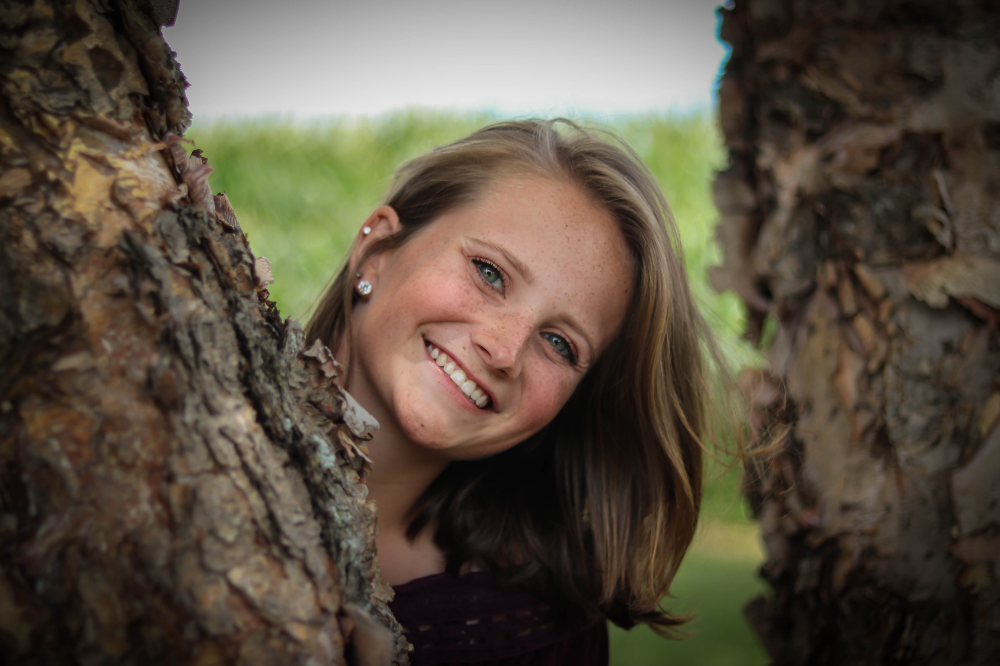
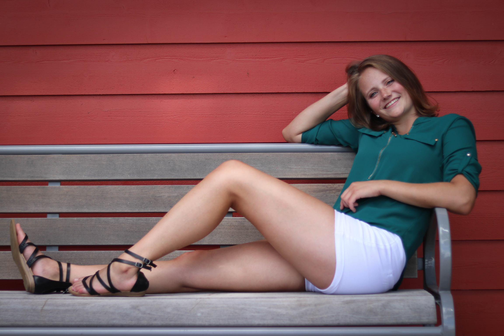
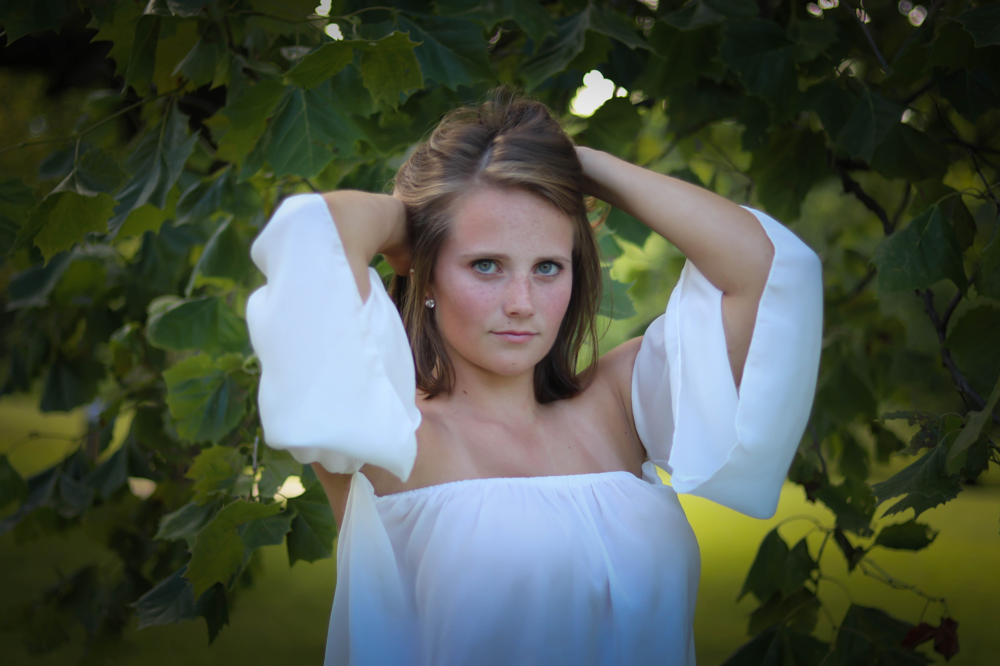
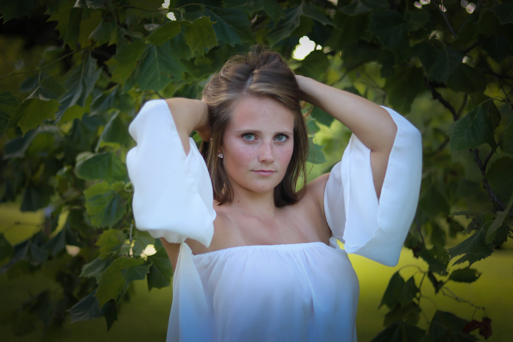
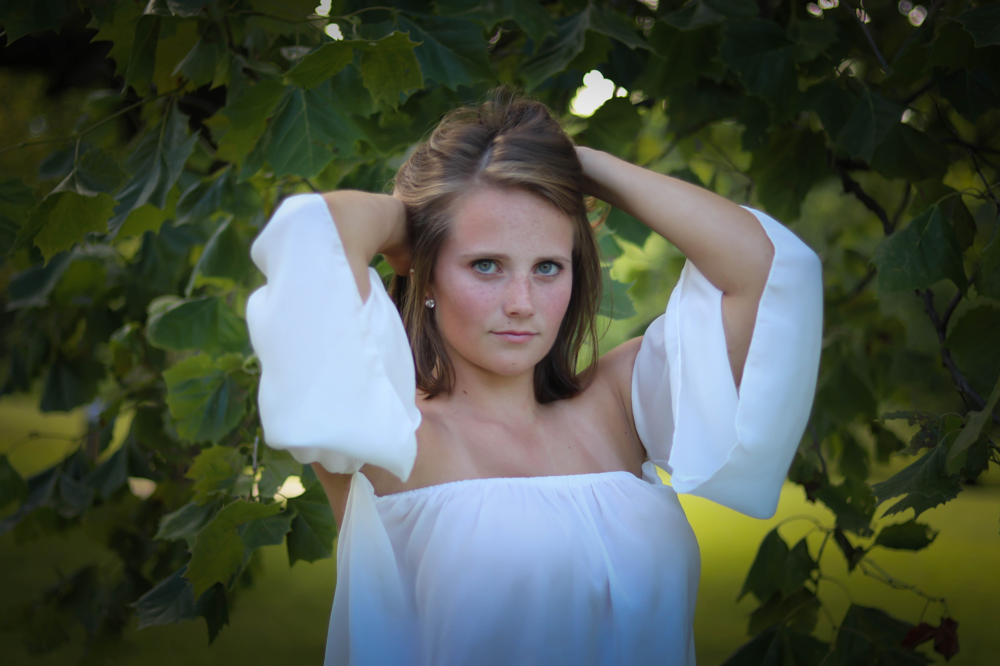

I am Sydney Andreasen
Goals
- Master's in CS through 4 + 1 program.
- Graduate in May 2023.
- Become a software developer.
- Start a family.
- Live on outskirts of big city.
- Marry a loving husband.
- Have three kids.
College
- Regent's Scholar.
- Computer Science Major, Biomechanics and Mathematics Minors.
- Started with Biomechanics and goal of being an OT.
- Inspired to be OT after doing PT following shoulder injury.
- Added Mathematics major with goal switch to research.
- Loved coding course for Mathematics major.
- Love of coding and the possibilities in CS led to major switch.
- Summer 2020 Software Engineering Internship at PayPal.
- Will graduate with Bachelor's in May 2022.
- Clubs.
- Biomechanics United.
- IS&T Mentoring Group.
- ACM-W.
- ACM.
Early Life
- Enjoyed math and science courses.
- Score 5 on U.S. History AP Exam.
- Score 5 on Calculus AB AP Exam.
- Score 4 on Chemistry AP Exam.
- Enjoyed instrumental music.
- Concert band.
- Marching band.
- Jazz band.
- Show choir band.
- Pit orchestra.
- Enjoyed sports and clubs.
- Softball.
- Varsity and JV captain.
- Tennis.
- Varsity captain.
- FBLA.
- Held Second Vice President and News Reporter offices.
- Fall Leadership Conference 2016, 2017
- State Leadership Conference 2016, 2017, 2018
- Fourth Place 2018 Partnership with Business Report
- Seventh Place 2017 Partnership with Business Report
- National Leadership Conference 2018
- Future, Business, Leader, and America Awards
- Community Service Award
- NHS.
- Grew up on family farm.
Where to Find Me
E-mail: sydandreasen@abbnebraska.com
Phone: 402-237-0162
Twitter: andreasensydney
Facebook: sydney.andreasen


 

